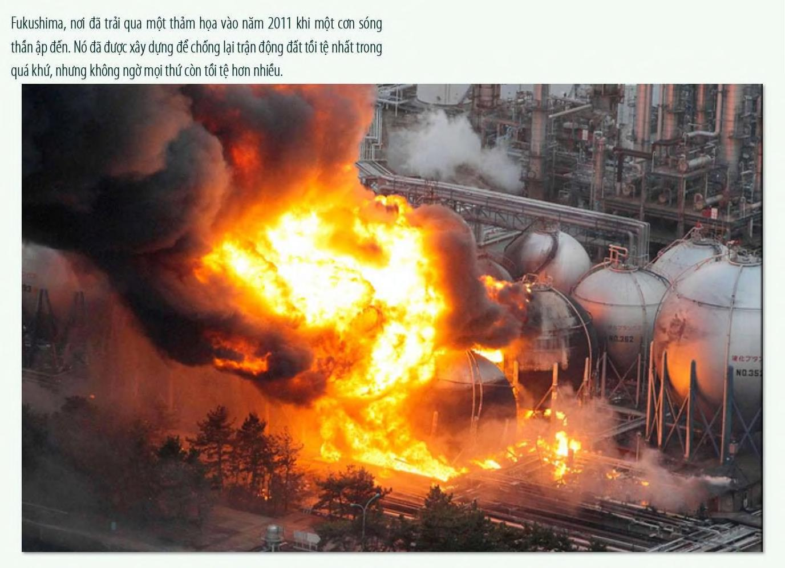

Fukushima, nơi đã trả qua một thảm họa vào năm 2011 khi một cơn sóng thần ập đến. Nó đã được xây dựng để chống lại trận động đất tối tệ nhất trong quá khứ, nhưng không ngờ mọi thứ còn tối tệ hơn nhiều.
